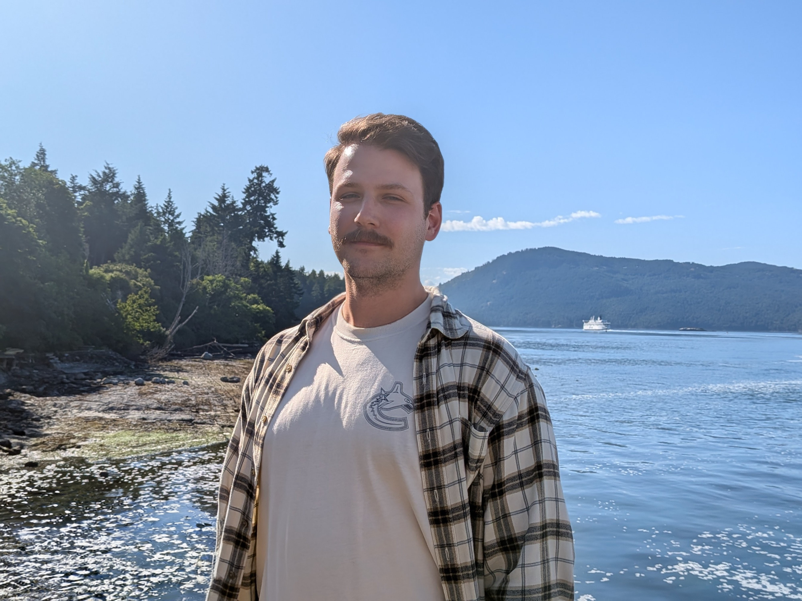

Christian Thielsch
Game Programmer | Crafting Interactive Narratives | Open to work within the EU and Canada

I’m a game programmer with around eight years of experience, mostly working on gameplay and systems, with some tools development along the way. I’ve shipped two games so far, and on my most recent project I was the most senior developer on the team.
What I care about most when writing code is how it feels to use. I’m especially interested in responsiveness and expressive player agency. I enjoy working on systems where the player’s intent comes through clearly, where the actions they take align with what the game is trying to communicate. For me, programming is not just about making things work, but about shaping the experience players actually have moment to moment.
I tend to get deeply invested in problems. When something doesn’t work, my focus narrows on understanding why, sometimes to the point of being a bit stubborn about it. Over time, I’ve learned that sitting with a problem, really analyzing it, usually leads to better and more stable solutions than rushing to apply a quick fix. This has been especially important in high-pressure situations like late-stage bugs or release issues, where staying calm helps both the project and the team.
In my last role, my level of experience naturally came with additional responsibility. I spent a lot of time mentoring younger team members, many of whom had just finished their degrees. That mentoring was partly technical, but just as often about things university doesn’t really teach. How production actually works, how to scope realistically, how to communicate problems early, and how to take care of yourself and others during stressful phases of development. I find a lot of value in helping people grow into their roles and feel more confident in a real production environment.
I see myself as a translator between design and code. I enjoy working closely with designers, understanding what they want to express, and figuring out how to turn that into systems that are both flexible and robust. I value direct and honest communication, and I believe that sharing the struggle of development is what gives teamwork its meaning. Games are made by people, and how those people work together matters.
One of the most important lessons I’ve learned is to stay realistic. Not everything is possible within the time and resources available, and trying to force the impossible often hurts the product and the team. That doesn’t mean lacking ambition, but it does mean finding balance. Sometimes that involves pushing back, often upwards, to protect quality and the well-being of the people doing the work. I care deeply about making good games, but I also care about making them in a way that is sustainable.
I’m personally drawn to narrative games, and more broadly to games that have something they want to express. What I love about games as a medium is that you don’t just observe them, you take part in them. At the same time, even non-narrative experiences can be deeply meaningful through interaction alone. Making games feels like the most open-ended sandbox puzzle I can imagine, and creating things is something I genuinely need to do.
The longer I work in games, the more I’ve come to value time away from technology. Being outside, going for walks or hikes, helps me reset and keep perspective. Stepping back often makes it easier to see what really matters on a project and where things are drifting off course.
I’ve worked mostly in small to medium-sized indie teams so far, but I’m open to working in larger teams as well. What matters most to me is the people and the craft.
Canada is where I want to build my long-term future. I have spent time in British Columbia and found that it is a place where I could genuinely see myself settling, but my goal is ultimately to establish myself in Canada and contribute to its games industry. Canada has a strong and diverse game development scene, with established studios and a growing independent sector across several provinces. I believe working within that environment would expose me to new perspectives, experienced developers, and opportunities that would push me to become the best developer I can be. In the long term, I would ideally settle in British Columbia, but I am open to starting my career anywhere in Canada where I can find the right opportunity.
At the end of the day, I try to be someone who cares deeply about craft and about people. Someone who brings calm when things get difficult, who takes responsibility seriously, and who wants to help teams build the best games they can.